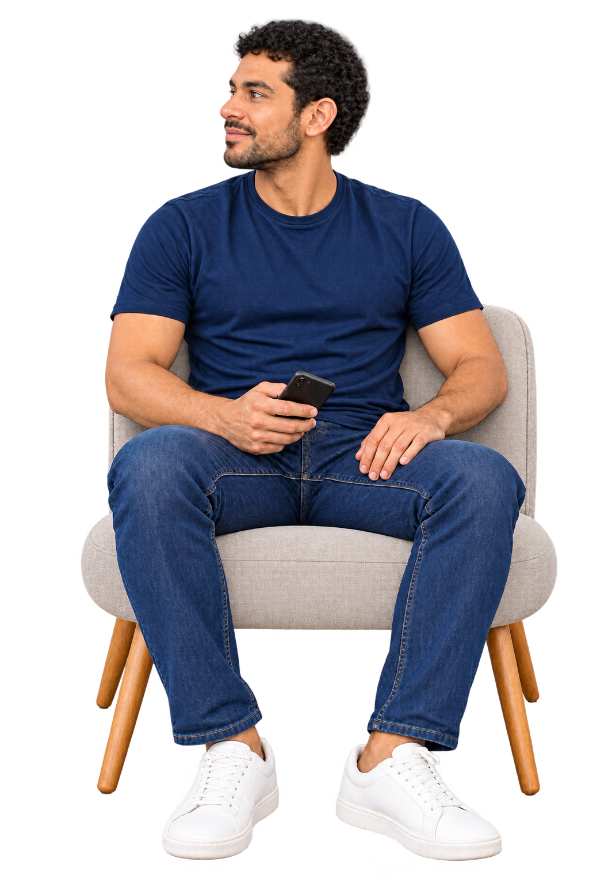

O saldo está
no azul.
E a dívida?
Em dois dias, transformamos dados em uma ideia de produto. Depois, voltamos ao protótipo para fazer o que faltava: tornar as decisões mais claras para as pessoas.
Bússola Simulação
Oi, Fernando.
O que você quer realizar?
Comece pelo seu objetivo.
Comprar um apartamento ↗
Planejar uma viagem ↗
Fazer uma pós ↗
Organizar dívidas ↗
Simulação. Você decide.

UI: estado reconstituído da experiência; exemplo de simulação.